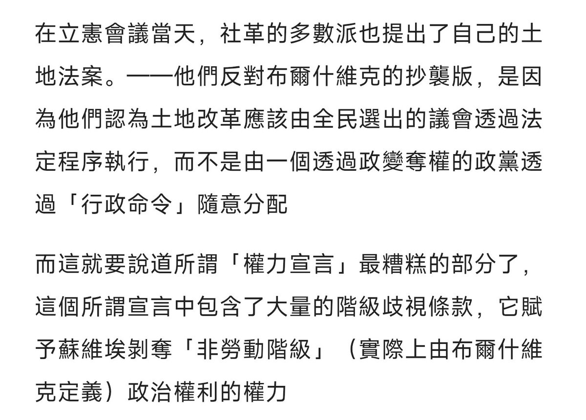

@nanami269322 繃，布布的《土地法令》內容，基本上就全文照搬了社革黨長期以來的主張
至於剩下的內容在這，能不能不要看到個法令的名字就望文生義


至於剩下的內容在這，能不能不要看到個法令的名字就望文生義

首先，前者的名字雖然好聽，但實際上其核心條款並不是關於福利，而是要求立憲會議承認「立憲會議的任務僅限於在蘇維埃制定的框架下起草法律」，這無異于立憲會議在開會第一天就宣布自己是布爾什維克政府的「橡皮圖章」，什麼多黨協商政治制度
至於後者就更好笑了，布黨抄襲社革的綱領還叫上了，無敵了 https://t.co/N5XwQKm3CP https://t.co/2uulLIURty
至於後者就更好笑了，布黨抄襲社革的綱領還叫上了，無敵了 https://t.co/N5XwQKm3CP https://t.co/2uulLIURty
昨天又看到群里有人拿立宪会议说事，绷不住了。就算抛开右翼社革举着左翼社革的口号骗取社革大部分选票，选举后打压左翼社革和布尔什维克不谈。如果认为在一个工人农民占多数的国家，否认《土地法令》《被剥削劳动人民权利宣言》的立宪会议能代表民主，那没有什么好说的了 https://t.co/vbESqu8tw4